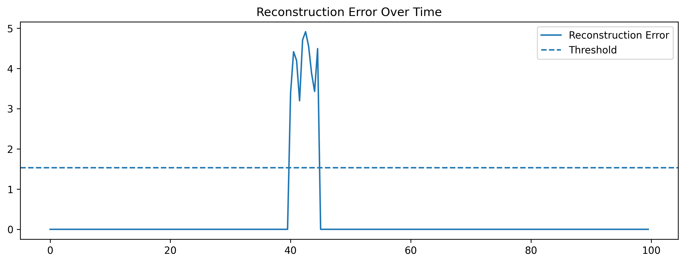
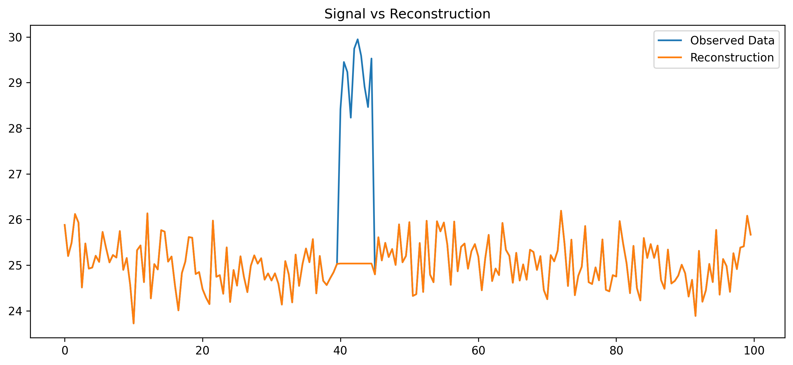

ML Playground
https://playground.scienxlab.org/ https://mlplaygrounds.com/machine/learning/linearRegression.html
Tensorflow Lite Micro on ESP32
Reference examples are available here. You have to download from github esp-nn and esp32-camera and place them into the relative folders under components.
Then go to examples/hello_worlds and as usual idf.py build, idf.py flash and finally idf.py monitor.
A nice explanation on how the model is generated can be found on the book TinyML by Pete Warden, Daniel Situnayake. The corresponding jupyter notebook is available here
Some other useful resources are listed below:
Anomaly detection
Build a real-time anomaly detector that identifies unusual patterns in sensor data (e.g., temperature, vibration, or audio) directly on the ESP32 using TinyML.
Step 1: Choose a dataset / sensor
Some options suitable for ESP32 sensors:
| Sensor type | Example dataset / task | Notes |
|---|---|---|
| Accelerometer | Detect unusual movement of a device (falling, shaking) | Use onboard MPU6050 |
| Temperature | Detect abnormal temperature spikes | Simple, easy for TinyML |
| Microphone | Detect unusual sounds (e.g., clapping, alarm) | Use I2S mic, feasible with Edge Impulse |
| Vibration | Predict machine anomalies | Requires IMU or piezo sensor |
| ## Step 2: Define the anomaly detection approach |
There are several approaches suitable for TinyML:
- Statistical thresholding
- Keep a running mean & standard deviation of sensor readings.
- Flag readings that are >2–3σ from the mean.
- Pros: very light, easy on ESP32 RAM.
- Cons: sensitive to noise.
- One-class ML model
- Train a model only on “normal” data, flag anything deviating.
- TinyML-compatible options:
- TensorFlow Lite for Microcontrollers (TFLM) with a small fully connected NN
- Isolation Forest (can be converted to tiny NN)
- Autoencoder: small network compressing and reconstructing input, high reconstruction error → anomaly
- TinyML library examples
- Edge Impulse Anomaly Detection: supports accelerometer, microphone, temp sensors. Generates ready-to-deploy TFLite micro models for ESP32.
Step 3: Preprocessing & feature extraction
Depending on the sensor:
| Sensor | Features |
|---|---|
| Accelerometer | RMS, mean, variance, FFT energy |
| Temperature | Rolling mean, slope, variance |
| Microphone | MFCCs, energy, zero-crossing rate |
| Vibration | RMS, spectral centroid, peak-to-peak |
Keep the features small (<10–20 floats) to fit TinyML models on ESP32.
Step 4: Train the model
- Collect “normal” data with ESP32 or simulate in Python.
- Train a tiny autoencoder or fully connected NN (e.g., 2–3 hidden layers, 16–32 neurons each).
- Convert to TensorFlow Lite for Microcontrollers.
- Load onto ESP32 using Arduino, PlatformIO, or ESP-IDF.
Step 5: Run inference on ESP32
- Sample the sensor every X ms (e.g., 100 ms).
- Feed the features to the TinyML model.
- Compute anomaly score:
- Autoencoder:
score = ||input - reconstructed|| - Threshold: if score > threshold → anomaly
- Autoencoder:
- Optional: trigger an LED, buzzer, or send a message via Wi-Fi/LoRa.
Exercise
- Collect 1 minute of normal temperature data from ESP32 sensor.
- Train a TinyML autoencoder on this data.
- Introduce a synthetic anomaly (e.g., sudden spike).
- Deploy model on ESP32.
- Detect anomaly in real time and light up LED.
- Optional challenge: add wireless logging of anomalies to a server.
Python / TensorFlow – Training the Autoencoder
import tensorflow as tf
import numpy as np
# 1.0 Create dummy data (Normal = 20-30 degrees)
#data = np.random.uniform(20, 30, (1000, 1)).astype('float32')
# 1.1 Mean of 25 degrees, standard deviation of 2
data = np.random.normal(25, 2, (1000, 1)).astype('float32')
# Clip it to ensure it stays within reasonable physical bounds
data = np.clip(normal_data, 15, 35)
# 2. Define the Autoencoder
model = tf.keras.Sequential([
tf.keras.layers.Input(shape=(1,)),
tf.keras.layers.Dense(4, activation='relu'), # Encoder
tf.keras.layers.Dense(1, activation='linear') # Decoder
])
model.compile(optimizer='adam', loss='mse')
model.fit(data, data, epochs=50, verbose=0)
#######################################################################
# 3. Convert to TFLit
converter = tf.lite.TFLiteConverter.from_keras_model(model)
tflite_model = converter.convert()
# 4. Save as a C header file
with open("model_data.h", "wb") as f:
f.write(b"const unsigned char autoencoder_model_data[] = {\n")
# Convert binary to hex strings
hex_data = [f"0x{b:02x}" for b in tflite_model]
f.write(", ".join(hex_data).encode())
f.write(b"\n};\n")
f.write(f"const unsigned int autoencoder_model_data_len = {len(tflite_model)};".encode())
This trains a tiny autoencoder on "normal" temperature values. A convenient way to make a test is to use Colab
test_anomaly = np.array([[50.0]]) # Way too hot!
prediction = model.predict(test_anomaly)
print(f"Input: 50.0, Reconstruction: {prediction[0][0]}, Error: {abs(50.0 - prediction[0][0])}")
Adding Normalization is the "secret sauce" for neural networks.
import numpy as np
import tensorflow as tf
# Define expected range
MIN_TEMP = 10.0
MAX_TEMP = 40.0
def normalize(val):
return (val - MIN_TEMP) / (MAX_TEMP - MIN_TEMP)
# Generate normal training data (20 to 30 degrees)
raw_data = np.random.normal(25, 2, (1000, 1)).astype('float32')
normalized_data = normalize(raw_data)
# Simple Autoencoder
model = tf.keras.Sequential([
tf.keras.layers.Input(shape=(1,)),
tf.keras.layers.Dense(8, activation='relu'),
tf.keras.layers.Dense(1, activation='sigmoid') # Sigmoid forces output 0-1
])
model.compile(optimizer='adam', loss='mse')
model.fit(normalized_data, normalized_data, epochs=50, verbose=0)
# Export... (use the same conversion script as before)
Arduino / ESP32 – Load & Run TFLite Model
#include <Arduino.h>
#include "model_data.h" // Must contain autoencoder_model_data and autoencoder_model_data_len
// TensorFlow Lite Micro Headers
#include "tensorflow/lite/micro/all_ops_resolver.h"
#include "tensorflow/lite/micro/micro_interpreter.h"
#include "tensorflow/lite/micro/micro_error_reporter.h"
#include "tensorflow/lite/schema/schema_generated.h"
// --- Configuration ---
#define SENSOR_PIN 34
#define LED_PIN 2
// Normalization constants (Must match your Python script!)
const float MIN_TEMP = 10.0;
const float MAX_TEMP = 40.0;
const float ANOMALY_THRESHOLD = 0.15; // 15% reconstruction error
// --- TFLM Globals ---
// Alignment is crucial for ESP32/ARM performance
alignas(16) uint8_t tensor_arena[15 * 1024];
tflite::MicroInterpreter* interpreter = nullptr;
TfLiteTensor* input = nullptr;
TfLiteTensor* output = nullptr;
static tflite::MicroErrorReporter error_reporter;
void setup() {
Serial.begin(115200);
pinMode(LED_PIN, OUTPUT);
delay(1000);
Serial.println("Initializing Anomaly Detector...");
// 1. Load the Model
const tflite::Model* model = tflite::GetModel(autoencoder_model_data);
if (model->version() != TFLITE_SCHEMA_VERSION) {
Serial.println("Model schema mismatch!");
while (1);
}
// 2. Resolver (Registers the layers like Dense, Relu)
static tflite::AllOpsResolver resolver;
// 3. Create Interpreter
static tflite::MicroInterpreter static_interpreter(
model, resolver, tensor_arena, sizeof(tensor_arena), &error_reporter);
interpreter = &static_interpreter;
// 4. Allocate memory for tensors
TfLiteStatus allocate_status = interpreter->AllocateTensors();
if (allocate_status != kTfLiteOk) {
Serial.println("AllocateTensors() failed! Increase arena size.");
while (1);
}
// 5. Get pointers to input/output buffers
input = interpreter->input(0);
output = interpreter->output(0);
Serial.println("System Ready. Monitoring Sensor...");
}
void loop() {
// --- 1. Data Acquisition & Scaling ---
// Read 12-bit analog (0-4095) and convert to Celsius (example math)
float raw_voltage = analogRead(SENSOR_PIN) * (3.3 / 4095.0);
float raw_temp = (raw_voltage * 10.0) + 20.0;
// Normalize to 0.0 - 1.0 (Same as Python!)
float normalized_input = (raw_temp - MIN_TEMP) / (MAX_TEMP - MIN_TEMP);
// Safety clip to keep input within 0.0 and 1.0
if (normalized_input < 0.0f) normalized_input = 0.0f;
if (normalized_input > 1.0f) normalized_input = 1.0f;
// --- 2. Inference ---
input->data.f[0] = normalized_input;
TfLiteStatus invoke_status = interpreter->Invoke();
if (invoke_status != kTfLiteOk) {
Serial.println("Inference failed!");
return;
}
float normalized_output = output->data.f[0];
// --- 3. Anomaly Logic ---
// Reconstruction error = |Input - Output|
float anomaly_score = abs(normalized_input - normalized_output);
// Convert reconstruction back to Celsius for display
float recon_temp = (normalized_output * (MAX_TEMP - MIN_TEMP)) + MIN_TEMP;
// --- 4. Reporting ---
Serial.print("Real: "); Serial.print(raw_temp);
Serial.print(" | Recon: "); Serial.print(recon_temp);
Serial.print(" | Score: "); Serial.println(anomaly_score, 4);
if (anomaly_score > ANOMALY_THRESHOLD) {
Serial.println(">>> ANOMALY DETECTED! <<<");
digitalWrite(LED_PIN, HIGH);
} else {
digitalWrite(LED_PIN, LOW);
}
delay(500); // 2Hz sampling
}
- In the context of an Autoencoder, an anomaly is detected when the model fails to recreate the input accurately. Anomaly Score == ∣∣x−x^∣∣ (see below)
- Very lightweight: fits ESP32 with ~2 KB tensor arena.
Why Autoencoder?
We want to detect anomalies in sensor data, e.g., temperature spikes, unusual vibration, or abnormal movement patterns.
Key points:
- Normal data is abundant
- Anomalies are rare or hard to label in advance
This is a classic unsupervised anomaly detection problem.
An autoencoder is a neural network trained to reconstruct its input:
Input x → Encoder → Latent Space → Decoder → Output x̂ (reconstruction)
- It learns the patterns of “normal” data.
- If you feed it a normal sample, it reconstructs it accurately → low reconstruction error.
- If you feed it an anomalous sample, it cannot reconstruct it well → high reconstruction error.
So the reconstruction error can be used as an anomaly score:
Anomaly Score == ∣∣x−x^∣∣
| Advantage | Why it matters for ESP32 |
|---|---|
| Lightweight | A small autoencoder (few layers, few neurons) can run on a microcontroller. |
| No labeled anomalies needed | Only needs normal data to train. Useful because anomalies are rare. |
| Generalizable | Can detect anomalies that were not seen during training. |
| Simple inference | Forward pass only → low latency → real-time detection. |
| ## Alternative approaches vs autoencoder |
| Method | Pros | Cons for ESP32 |
|---|---|---|
| Statistical threshold (mean ± 3σ) | Very light | Doesn’t capture complex patterns; sensitive to noise |
| One-class SVM | Can capture nonlinear boundaries | Memory-heavy; slower inference |
| Isolation Forest | Good for multidimensional data | Not trivial to run on microcontrollers |
| Autoencoder | Captures complex patterns, light | Needs tiny neural network tuning |
✅ Autoencoder is a perfect balance between capability and feasibility for TinyML on microcontrollers.
Intuition
Think of it like this:
- Autoencoder learns a “normal sensor behavior fingerprint.”
- Anything that deviates from that fingerprint → flagged as anomaly.
- Works for time series, multivariate data, or even audio features (MFCCs).
Normal Data Anomalous Data
---------------- ----------------
Temp = 25 ± 0.5 Temp spike = 30
| |
v v
+-------------+ +-------------+
| Encoder | | Encoder |
+-------------+ +-------------+
| |
v v
Latent representation Latent representation
| |
v v
+-------------+ +-------------+
| Decoder | | Decoder |
+-------------+ +-------------+
| |
v v
Reconstructed Temp = 25 ± 0.5 Reconstructed Temp ≈ 25.1
| |
v v
Reconstruction error ≈ 0 Reconstruction error ≈ 4.9
| |
v v
✅ Normal ⚠️ Anomaly detected
- Normal Data
- Autoencoder is trained on “normal” temperature readings (~25°C).
- Encoder compresses input → decoder reconstructs it almost perfectly.
- Reconstruction error ≈ 0 → Not an anomaly.
-
Anomalous Data
- Temperature suddenly spikes to 30°C.
- Autoencoder has never seen this pattern, so reconstruction fails.
- Reconstruction error is high → anomaly detected.
-
Works without labeled anomalies
- Lightweight computation: forward pass only
- Can extend to multivariate input (temperature + humidity + vibration)
- Threshold on reconstruction error decides anomaly vs normal

